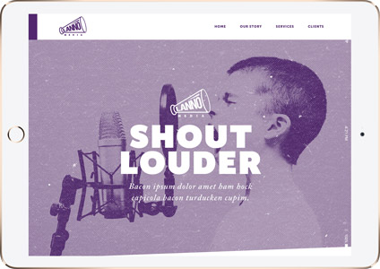
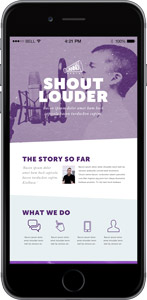
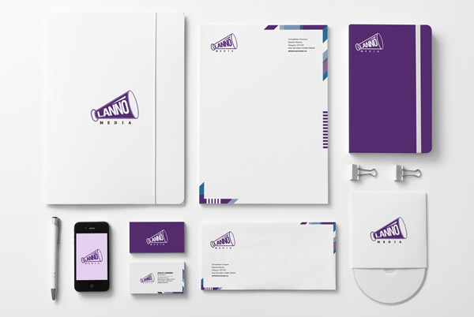

Lanno Media UI concept and Identity
-
2015
-
TECHNOLOGIES
HTML, CSS, JS, Adobe CS
-
DELIVERABLES
UI design concept & Identity design
-
FOCUS ON
UI design
The brief was to choose from a list of 1980s movies and create a project pipeline and promotional website mock-up. The website had to engage with the prospective audience, taking the genre into consideration. The site was only made responsive for a couple of devices due to time constraints, however it will be made fully responsive in due course. I employed the project to apply some CSS animations to the characters, bringing a sense of mischievousness like the movie.

- 